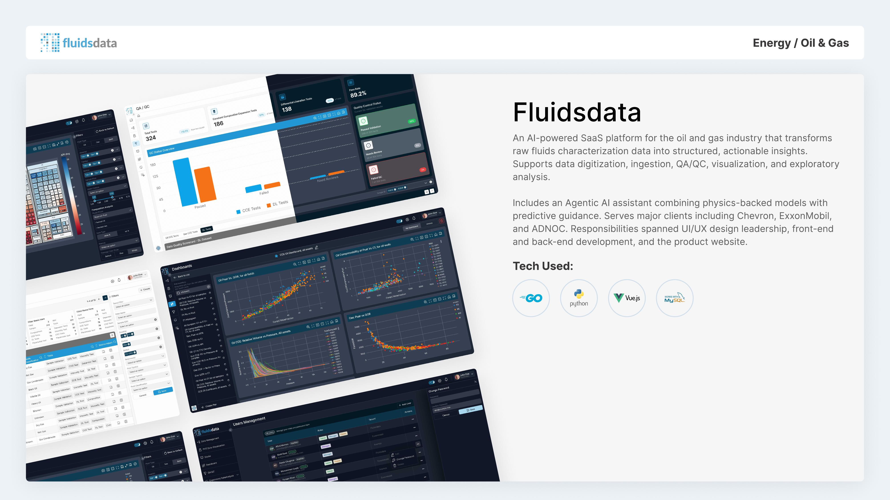

Drilling fluids data that answers back.
In active use by teams at Chevron, ExxonMobil and ADNOC. Raw lab and field data goes in. Structured dashboards, QA'd numbers and an agentic assistant come out.
What the system does without anyone retyping it
- 01Sample logged
- 02Data parsed
- 03Model runs
- 04Report published
What it is
An AI-powered SaaS analytics platform for oil and gas. It handles the whole path: digitizing lab reports, ingesting vendor and field data, running QA/QC on it, and rendering it as dashboards and exploratory analysis built for fluids engineers. On top of that sits a Fluids Intelligence layer that couples physics-backed domain models with an agentic AI assistant for predictive guidance.

The problem
Field and lab data for fluids engineering arrives messy, siloed and slow to interpret. It is the kind of raw technical data that usually means someone spends hours in spreadsheets before a decision gets made, on wells where that delay has a real daily cost. Worse, nothing in that manual path catches a physically impossible value, so a transcription error can survive all the way to a decision.
What we shipped
- Digitization and ingestion across lab reports and vendor formats
- Automated QA/QC that flags implausible values at ingestion
- Structured dashboards over raw drilling-fluids data
- Exploratory analysis tooling built for fluids engineers
- An agentic assistant giving predictive guidance, not just charts
Where it stands today
- In active use by teams at Chevron
- In active use by teams at ExxonMobil
- In active use by teams at ADNOC
- Sister product Compo++ shares the same core engine
- Built and maintained against a high bar on data trust
The same well, before and after ingestion.
This is the actual shape of the problem. On the left, what a lab hands over. On the right, what an engineer can act on.
WELL-4471 / SAMPLE 08 mud wt.......... 12.4ppg PV ............. 21 YP ............. 18 lb/100ft2 10s gel ........ 7 10m gel ........ n/a cl- ............ 128,000 solids% ........ 14.2 temp ........... 148F (bottom hole?) note: rerun on 3rd sample, discard 2nd
Free text, inconsistent units, a missing reading and an instruction buried in a note field. Multiply by every sample on every well.
| Property | Value | Unit | QA/QC |
|---|---|---|---|
| Mud weight | 12.40 | ppg | In range |
| Plastic viscosity | 21.0 | cP | In range |
| Yield point | 18.0 | lb/100ft² | In range |
| Gel 10 sec | 7.0 | lb/100ft² | In range |
| Gel 10 min | — | lb/100ft² | Missing |
| Chlorides | 128,000 | mg/L | Review: high |
| Solids | 14.2 | % | In range |
| Temperature | 64.4 | °C | Depth unconfirmed |
Asking the assistant instead of building the chart.
An illustrative exchange in the style of the agentic layer. The point is that it answers in domain terms and shows the data behind the answer.
Show Us One Manual Process. We'll Show You What Automating It Takes
One conversation, and you know what it takes.